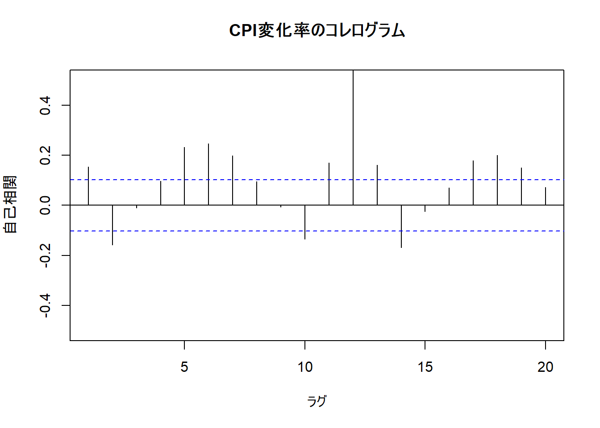

沖本本 第一章
1 問題（p.17）
2019年のGWは10連休ということで、私HRYは昨日は飲み会に誘われていたものの非リアであり、10連休のほとんどを引きこもるつもりでいます。ですが、このせっかくの10連休はアクティブな引きこもりになろうということで、指導教授から「VARモデルについては、これを見といて。」と渡された『経済・ファイナンスデータの 計量時系列分析』（通称：沖本本）を読み直して、章末問題を解いていければと思っています。もし解答に間違い等があれば、私のTwitter垢にご指摘のコメントを頂ければ幸いです。
1.1 弱定常過程において、\(\gamma_{k}=\gamma_{-k}\)が成立することを確認せよ。
弱定常過程はp.24に載っている\(y_{t}=\mu+\epsilon_{t}, \epsilon_{t} \sim W . N .\left(\sigma^{2}\right)\) (1.8)とします。 採用するデータは、JohnsonJohnsonにします。このデータは1960〜1980年におけるジョンソン＆ジョンソンのシェアあたりの四半期収益を示す時系列データです。 それでは、問題に取り組んでいきます。
# 外部パッケージ
library(tidyverse)## -- Attaching packages ------------------------------------------------------------------- tidyverse 1.2.1 --## √ ggplot2 2.2.1 √ purrr 0.2.4
## √ tibble 1.4.1 √ dplyr 0.7.4
## √ tidyr 0.7.2 √ stringr 1.2.0
## √ readr 1.1.1 √ forcats 0.2.0## -- Conflicts ---------------------------------------------------------------------- tidyverse_conflicts() --
## x dplyr::filter() masks stats::filter()
## x dplyr::lag() masks stats::lag()# 対象データ
dataset <- JohnsonJohnson
# datasetの平均と標準偏差
mu <- mean(dataset); sd <- sd(dataset)
# 定数k
k <- runif(1, min = 1, max = length(dataset)) %>% as.integer()
# ホワイトノイズ
set.seed(1)
white.noise <- rnorm(n = length(dataset), mean = 0, sd = sd)
white.noise_ts <- ts(white.noise, start = 1)
# 弱定常過程
y_t <- mu + white.noise_ts
# k次のラグデータ
y_t_k <- stats::lag(x=y_t, k=k)
gamma_k_t <- cov(y_t, y_t_k)
# γ_-k
y_t_minusk <- stats::lag(x=y_t, k=-k)
gamma_minusk <- cov(y_t, y_t_minusk)
# 問題文の式が成り立つか確認
gamma_k_t == gamma_minusk## [1] TRUEこれで、視覚的に\(\gamma_{k}=\gamma_{-k}\)が成立することが確認できます。
1.2 \(y_{t}=\mu+\epsilon_{t}, \epsilon_{t} \sim W . N .\left(\sigma^{2}\right)\) (1.8)が弱定常過程であることを確認せよ。
任意のtとkに対して
\(\begin{aligned} E\left(y_{t}\right) &=\mu \\ \operatorname{Cov}\left(y_{t}, y_{t-k}\right) &=E\left[\left(y_{t}-\mu\right)\left(y_{t-k}-\mu\right)\right]=\gamma_{k} \end{aligned}\)
が成立する場合、過程は弱定常（定常）といわれます。(p.8)
対象とする過程が定常過程かどうかは、ADF検定により確認することができます。ADF検定とは、帰無仮説「過程が単位根過程である」が棄却されれば定常過程であるとする検定です。単位根過程については、5章で詳しく述べられています。
tseries::adf.test(y_t)## Warning in tseries::adf.test(y_t): p-value smaller than printed p-value##
## Augmented Dickey-Fuller Test
##
## data: y_t
## Dickey-Fuller = -4.8613, Lag order = 4, p-value = 0.01
## alternative hypothesis: stationaryこの結果には、p値が0.01以下であることが示されています。よって、帰無仮説は棄却され、\(y_{t}=\mu+\epsilon_{t}, \epsilon_{t} \sim W . N .\left(\sigma^{2}\right)\) (1.8)は定常過程であるといえます。
1.1と1.2の数式に基づいた解法はこちらのQiita記事をご覧になるとよいでしょう。
1.3 正規ホワイトノイズを発生させ、図1.3と同様の図を描け。
# 平均0、標準偏差1
wn1 <- data.frame(x = 1:100, y = rnorm(100, mean = 0, sd = 1))
ggplot(wn1) + geom_line(aes(x=x, y=y)) + ggtitle("(a)μ=0, σ=1") + xlim(0, 100)
# 平均2、標準偏差1
wn2 <- data.frame(x = 1:100, y = rnorm(100, mean = 2, sd = 1))
ggplot(wn2) + geom_line(aes(x=x, y=y)) + ggtitle("(b)μ=2, σ=1") + xlim(0, 100)# 平均―2、標準偏差1
wn3 <- data.frame(x = 1:100, y = rnorm(100, mean = -2, sd = 1))
ggplot(wn3) + geom_line(aes(x=x, y=y)) + ggtitle("(c)μ=-2, σ=1") + xlim(0, 100)# 平均0、標準偏差2
wn4 <- data.frame(x = 1:100, y = rnorm(100, mean = 0, sd = 2))
ggplot(wn4) + geom_line(aes(x=x, y=y)) + ggtitle("(d)μ=0, σ=2") + xlim(0, 100)# 平均0、標準偏差3
wn5 <- data.frame(x = 1:100, y = rnorm(100, mean = 0, sd = 3))
ggplot(wn5) + geom_line(aes(x=x, y=y)) + ggtitle("(e)μ=0, σ=3") + xlim(0, 100)# 平均2、標準偏差2
wn6 <- data.frame(x = 1:100, y= rnorm(100, mean = 2, sd = 2))
ggplot(wn6) + geom_line(aes(x=x, y=y)) + ggtitle("(f)μ=2, σ=2") + xlim(0, 100)1.4 弱定常過程であるが、強定常過程でない確率過程の例を考えよ。
この問いに関しては、正直分かりませんw
少なくともその一つとして、今までに扱った（1.8）式のモデルはそれに当てはまるはずです。
\(y_{t}=\mu+\epsilon_{t}, \epsilon_{t} \sim W . N .\left(\sigma^{2}\right)\)
強定常性をもった定常過程の例として代表的なものは、定義1.3(p.11)にあるiid系列が挙がります。
\(y_{t} \sim i i d\left(\mu, \sigma^{2}\right)\)
1.5 ホームページからeconomicdata.xlsをダウンロードして以下の問いに答えよ。
※2019年4月29日現在、沖本先生のホームページが移転されており、当該データがダウンロードできない状態になっています。私は以前ダウンロードしたものを何とか引っ張り出してきました（汗）
このデータは、1975年1月から2005年4月までの月次データで内容は以下の通りです。
- date: 日付
- topix: 東証株価指数（TOPIX）
- exrate: 実効為替レート
- indprod: 季調済み鉱工業生産指数
- cpi: 消費者物価指数（CPI）
- saunemp: 季調済み失業率
- intrate: コールレート
economicdata <- read_csv("~\\OkimotoBook\\economicdata.csv")## Parsed with column specification:
## cols(
## date = col_character(),
## topix = col_double(),
## exrate = col_double(),
## indprod = col_double(),
## cpi = col_double(),
## saunemp = col_double(),
## intrate = col_double()
## )head(economicdata)## # A tibble: 6 x 7
## date topix exrate indprod cpi saunemp intrate
## <chr> <dbl> <dbl> <dbl> <dbl> <dbl> <dbl>
## 1 Jan-75 276 29.1 47.3 52.6 1.70 12.7
## 2 Feb-75 300 29.7 46.9 52.7 1.80 13.0
## 3 Mar-75 314 30.0 46.2 53.1 1.80 12.9
## 4 Apr-75 321 29.8 47.3 54.1 1.80 12.0
## 5 May-75 330 29.8 47.3 54.4 1.80 11.1
## 6 Jun-75 328 29.6 47.8 54.4 1.80 10.7(1) 図1.1と同様なグラフを描け
# TOPIX
topix <- ts(economicdata$topix, start = c(1975,1), frequency = 12)
ts.plot(topix, gpars = list(main="TOPIX", xlab="year", ylab="", ylim=c(0, 3500)))
abline(h=seq(0, 3500, 500), col="gray", lty=2)
# 実効為替レート
exrate <- ts(economicdata$exrate, start = c(1975,1), frequency = 12)
ts.plot(exrate, gpars = list(main="実効為替レート", xlab="year", ylab="", ylim=c(0, 120)))
abline(h=seq(0, 120, 20), col="gray", lty=2)# 鉱工業生産指数
indprod <- ts(economicdata$indprod, start = c(1975,1), frequency = 12)
ts.plot(indprod, gpars = list(main="鉱工業生産指数", xlab="year", ylab="", ylim=c(0, 120)))
abline(h=seq(0, 120, 20), col="gray", lty=2)# CPI
cpi <- ts(economicdata$cpi, start = c(1975,1), frequency = 12)
ts.plot(cpi, gpars = list(main="CPI", xlab="year", ylab="", ylim=c(0, 120)))
abline(h=seq(0, 120, 20), col="gray", lty=2)# 失業率
saunemp <- ts(economicdata$saunemp, start = c(1975,1), frequency = 12)
ts.plot(saunemp, gpars = list(main="失業率", xlab="year", ylab="", ylim=c(0, 6)))
abline(h=seq(0, 6, 1), col="gray", lty=2)# コールレート
intrate <- ts(economicdata$intrate, start = c(1975,1), frequency = 12)
ts.plot(intrate, gpars = list(main="コールレート", xlab="year", ylab="", ylim=c(0, 14)))
abline(h=seq(0, 14, 2), col="gray", lty=2)(2) topix, extrate, indprodの対数差分系列を計算せよ。
# 対数差分系列
topix.d <- diff(log(topix), lag = 1, differences = 1)
exrate.d <- diff(log(exrate), lag = 1, differences = 1)
indprod.d <- diff(log(indprod),lag = 1, differences = 1)
# データフレーム化
df.diff <- cbind.data.frame(topix.d, exrate.d, indprod.d)
head(df.diff)## topix.d exrate.d indprod.d
## 1 0.082422041 0.0193784748 -0.009979911
## 2 0.044650419 0.0093834469 -0.013319209
## 3 0.022301301 -0.0060220992 0.023299120
## 4 0.027930824 -0.0003356268 0.000000000
## 5 -0.005810874 -0.0063984054 0.009881296
## 6 -0.013114237 0.0114210177 0.009784610(3) 図1.2と同様なグラフを描け。
# topix.d
ts.plot(topix.d*100, gpars = list(main="TOPIXの変化率",
xlab="year", ylab="", ylim=c(-20, 15)))
abline(h=seq(-20, 15, 5), col="gray", lty=2)# exrate.d
ts.plot(exrate.d*100, gpars = list(main="実効為替レートの変化率",
xlab="year", ylab="", ylim=c(-8, 12)))
abline(h=seq(-8, 12, 2), col="gray", lty=2)# indprod.d
ts.plot(indprod.d*100, gpars = list(main="鉱工業生産指数の変化率",
xlab="year", ylab="", ylim=c(-5, 5)))
abline(h=seq(-5, 5, 1), col="gray", lty=2)(4) indprodの変化率に対して、自己相関の検定を行い、図1.4と表1.1の結果を確認せよ。
# 自己相関の検定
acf(diff(economicdata$indprod), type = "correlation", main="日本の経済成長率のコレログラム",
xlim=c(1, 20), ylim=c(-0.5, 0.5), xlab="ラグ", ylab="自己相関")ラグ次数1~4,13,15に有意水準5％の有意な自己相関がみられます。続いて、かばん検定を行います。
targetData <- diff(log(economicdata$indprod))
lag <- 1:10
# Ljung and Boxの統計量によるかばん検定
box.t <- apply(as.matrix(lag), 1, function(x) {
tmp = Box.test(targetData, type = "Ljung-Box", lag = x)
return(c(round(tmp$statistic, digits = 2), round(tmp$p.value, digits = 3)))
})
table.box.t <- data.frame(box.t)
rownames(table.box.t) <- c("Q(m)", "p-value")
colnames(table.box.t) <- lag
table.box.t## 1 2 3 4 5 6 7 8 9 10
## Q(m) 34.2 39.76 50.4 51.8 51.91 54.46 54.46 57.46 57.94 58.84
## p-value 0.0 0.00 0.0 0.0 0.00 0.00 0.00 0.00 0.00 0.00p.17に掲載されている結果と同等な結果が得られました。
(5) 他のデータを用いて自己相関の検定を行え。 ここでは、消費者物価指数（CPI) を対象とします。
targetData2 <- diff(log(economicdata$cpi))
# 自己相関の検定
acf(targetData2, type = "correlation", main="CPI変化率のコレログラム",
xlim=c(1, 20), ylim=c(-0.5, 0.5), xlab="ラグ", ylab="自己相関")
# Ljung and Boxの統計量によるかばん検定
box.t2 <- apply(as.matrix(lag), 1, function(x) {
tmp = Box.test(targetData2, type = "Ljung-Box", lag = x)
return(c(round(tmp$statistic, digits = 2), round(tmp$p.value, digits = 3)))
})
table.box.t2 <- data.frame(box.t2)
rownames(table.box.t2) <- c("Q(m)", "p-value")
colnames(table.box.t2) <- lag
table.box.t2## 1 2 3 4 5 6 7 8 9 10
## Q(m) 8.720 17.94 17.98 21.45 41.28 63.63 78.35 81.69 81.71 88.47
## p-value 0.003 0.00 0.00 0.00 0.00 0.00 0.00 0.00 0.00 0.00消費者物価指数については、多くのラグ次数で有意な自己相関がみられます。特に、ラグ次数12が顕著ですね。ラグ次数12とは、ちょうど1年分のラグですから、当然といえば当然ですかね。 p値についても10期までのすべてのｍで0.05以下となっており、CPIデータが自己相関を持つことは間違いないですね。
以上です。次の章の問題もマイペースにやっていこうと思います。とりあえず、この後は中日阪神戦でも見ようかな…